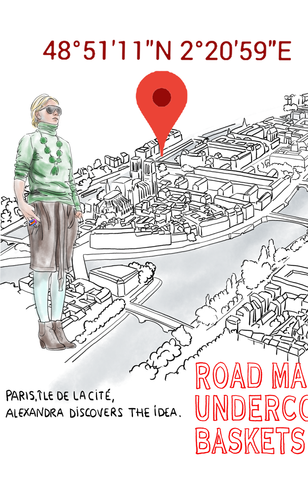
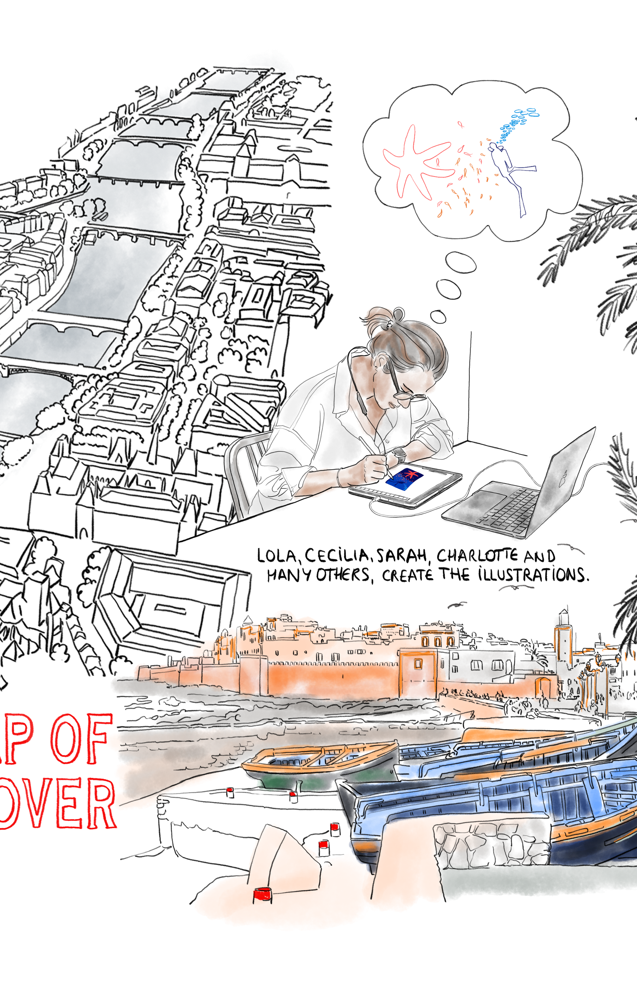
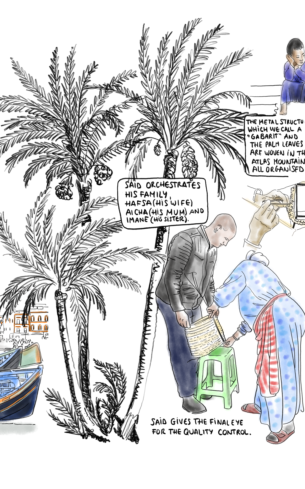
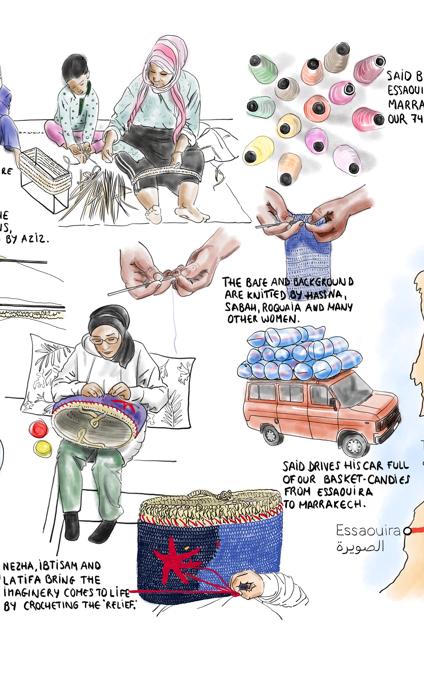
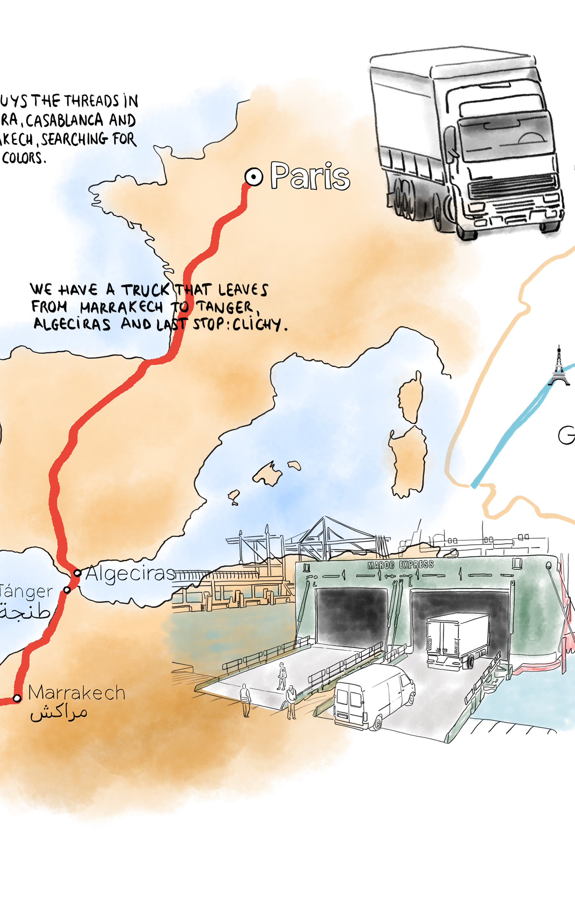
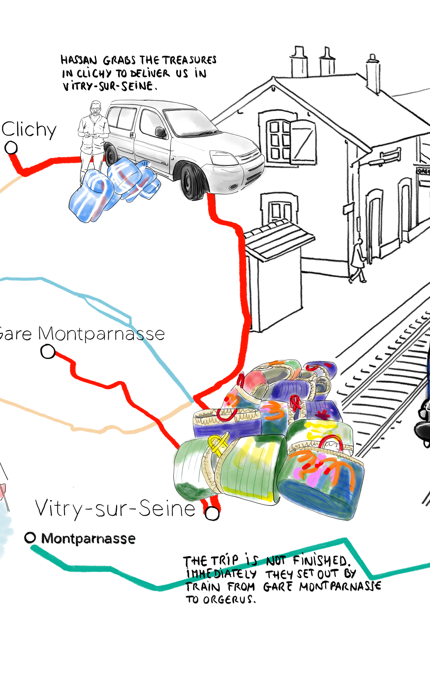

It begins here, on the banks of the Seine. Alexandra spots a basket — colourful, handmade, imperfect. She sees something else: a canvas. A story waiting to be embroidered.
48°51'11"N · 2°20'59"E
Lola, Cecilia, Sarah, Charlotte and many others create the illustrations.
Before a single thread is woven, the basket lives on a screen. Artists imagine every embroidery, every colour, every motif.
Every design begins
as a thought bubble.

Said orchestrates his family — Hafsa, Aicha and Imane.
The metal structure — what they call a "gabarit" — and the palm leaves are woven in the Atlas Mountains. Said gives the final eye for the quality control.
No machine. No shortcut.
Just hands and time.

Hassna, Sabah, Roquaia, Nezha, Ibtisam, Latifa — and many more hands.
Said buys threads in Essaouira, Casablanca and Marrakech — searching for the right colours.
The base is knitted, the background crocheted, the relief embroidered.
Said drives his car full of basket-candies from Essaouira to Marrakech.

We have a truck that leaves from Marrakech to Tanger, Algeciras — last stop: Clichy.
Fourteen kilometres of sea between two continents. The Maroc Express ferry at Tanger. From there, 2,500 kilometres north through Spain and France.
~2,500 km by road.
One ferry. One truck.
Two continents.
Hassan grabs the treasures in Clichy to deliver them in Vitry-sur-Seine.
The trip is not finished — immediately they set out by train from Gare Montparnasse to Orgerus.
Clichy · Vitry-sur-Seine
Gare Montparnasse · Orgerus

The pieces are photographed by Alexandra, Thomas and Côme in "La Roseraie" of the Castle of Courgent.
A TER train from Montparnasse. A castle in the countryside. A rose garden. The same basket that started in Morocco now faces a camera.
Gare Montparnasse → Orgerus
One hour by train.
Shops, beaches, mountains and cities all over the world. The trip is not finished — and barely twenty of the kilometres have been started. It is in your hands now.
Shop the Undercover →